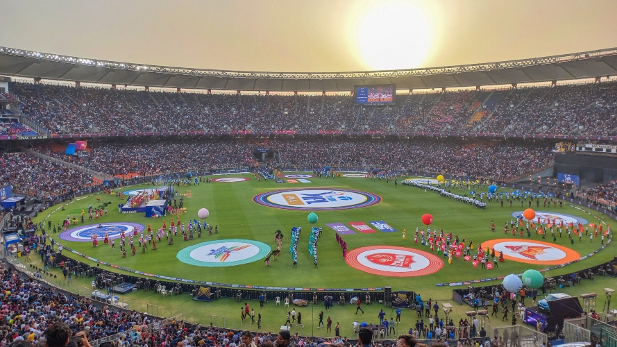
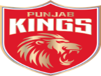
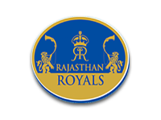
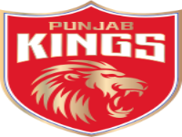
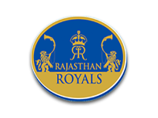

Premier League india, conocida popularmente como IPL, es sin duda la liga T20 más grande del mundo. IPL se considera el mejor paso dado por la Junta de Control de Cricket de India (BCCI) para mejorar el cricket indio y entrenar a los jóvenes.
  
 